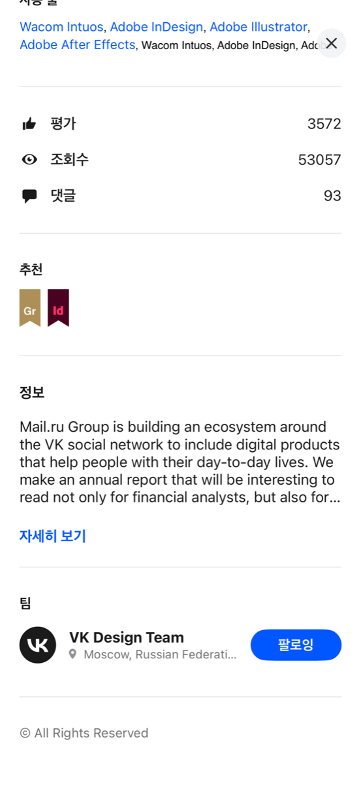
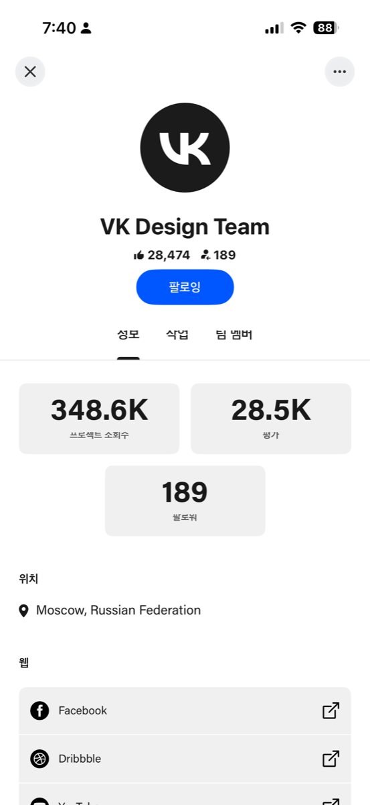
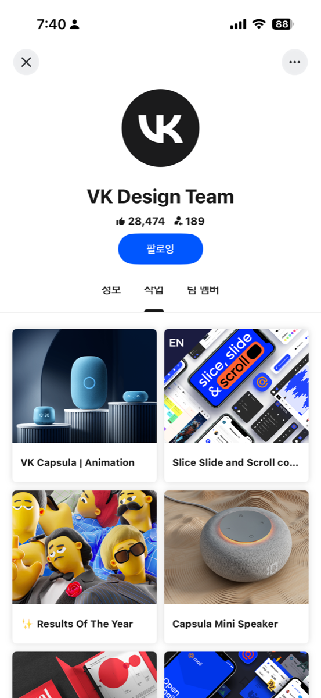
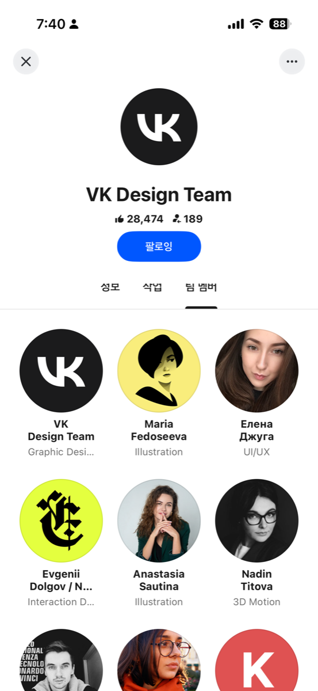
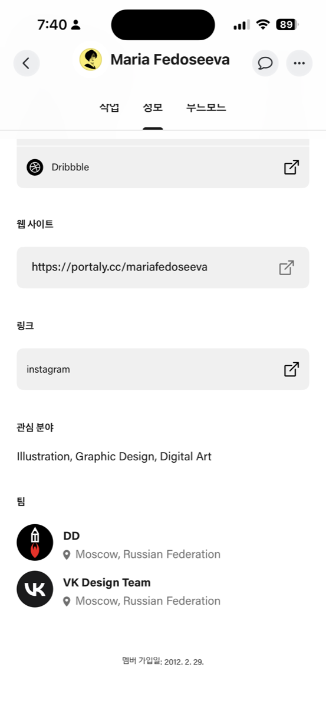

크리에이터클럽 · 개발요건정의서 · 에픽
[신규기능] 팀 — 팀 생성·관리팀 포폴 업로드 주체 설정·팀 정보 표시
정의
어떤 집단을 팀이라고 하는가
2명 이상의 크리에이터가 함께 작업물을 만들고, 팀으로서 그 작업물을 시장에 보여주는 집단
배경과 의도
왜 만드는가
크리에이터들이 C8 안에서 노크로 말을 걸고, 그룹 채팅으로 함께 작업을 하게됩니다.
그런데 함께 만든 작업물을 올릴 곳은 개인 프로필뿐입니다.
함께 만든 작업물이 팀의 이름으로 남을 자리가 필요합니다.
[참고] — Behance는 구성원과 작업을 팀 단위로 묶어 보여줍니다.
비핸스 참고 영상 | 팀 포트폴리오 - 하단 | 팀 프로필 | 팀원 개인 프로필 |
|---|---|---|---|
| ▶ Behance 팀_refer.MP4 (Jira 첨부에서 보기) |  |    |  |
목표 · MVP
이번에 어디까지 하는가
오픈 스펙 — 팀 생성 · 팀 그룹채팅 · 팀 프로필 · 팀 포트폴리오
이번 버전에서 크리에이터는 앱 안에서 팀을 만들고, 팀원을 모으고, 자동으로 생긴 팀 채팅에서 대화를 나누고, 함께 만든 작업물을 팀의 이름으로 보여줍니다.
팀 생성 — 팀 이름(영문 소문자 기준 중복체크) · 팀 프로필 사진 · 팀 한줄 소개를 입력 시 팀이 생성됩니다.
팀 구성원 초대 — 팀원 이름을 검색해 초대합니다.
팀 그룹채팅 — 팀을 새로 만들면 팀 전용 그룹채팅방이 함께 열립니다.
팀 포트폴리오 — 팀원이 한 번 등록하면 팀 프로필과 참여한 팀원의 개인 프로필에 함께 게시됩니다.
팀 프로필 — 팀을 새로 만들면 팀 프로필이 생성됩니다. 프로필은 팀 소개 · 팀 작업물 · 팀 구성원을 보여줍니다.
주요 사용자와 핵심 흐름
누가 어떻게 쓰는가
팀 생성(그룹채팅방 자동 생성) → 팀원 초대 → 합류 → 팀 포트폴리오 등록
팀 관리자가 팀을 만들면 전용 그룹채팅방이 함께 열리고, 이름 검색으로 초대받은 크리에이터가 팀원으로 합류해 포트폴리오를 등록합니다.
이미 프로젝트 채팅방에서 협업 중인 구성원은, 멤버가 정해진 시점에 채팅방에서 팀 프로필을 만들어 같은 흐름을 따릅니다. 이때 채팅방은 쓰던 방을 그대로 씁니다.
주요 기능
무엇을 개발하는가
역할 | 기능 · 흐름 순서 | 주요 요구사항 |
|---|---|---|
팀 관리자 | ① 팀 생성 |
|
② 팀정보 관리 |
| |
③ 팀원 초대 |
| |
팀원 | ④ 초대 알림 |
|
⑤ 팀 합류 |
| |
공통 | ⑥ 팀 그룹채팅 |
|
⑦ 팀 프로필 |
| |
⑧ 팀 포트폴리오 |
| |
⑨ 팀 해체 |
|
팀 나가기 · 팀 해체 · 회원 탈퇴 뒤의 노출 정책은 확정되어 있고, 상세는 개발 PRD가 담습니다.
추가 기획 의사결정 사항
- 팀 생성 기능 위치 - 연락처
- 프로젝트 멤버 결정 후 팀 생성 사용 플로우 → 오픈 스펙에서 제외
- 내가 올리지 않은 팀 포폴 상세화면 상단에 팀 정보 노출 → 일단 허용. 개발된걸 보고 판단예정
- 팀 채팅방 →오 픈 스펙으로 포함